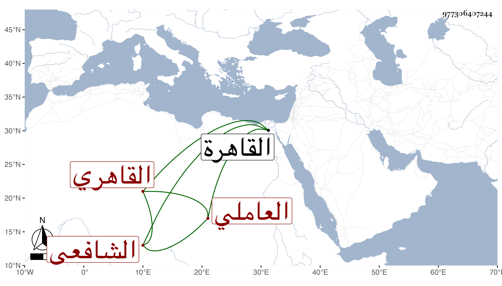

0902Sakhawi.DawLamic.ITO20230111-ara1.EIS1600.977306407244
Biography ID: 977306407244
376
الحسن بن أحمد بن حسن البدر العاملي ثم القاهري الشافعي نزيل سعيد السعداء وأحد أئمتها . ولد سنة خمس وسبعين وسبعمائة تقريبا بمنية عامل وقدم القاهرة أوائل القرن فحفظ القرآن والتنبيه والملحة ، وأخذ في الفقه عن البرهان البيجوري وحضر في الفرائض عند الشهاب العاملي وصحب ناصر الدين الشاطر ومحمد الاسيوطي وغيرهما ، وكان صالحا دينا ورعا زاهدا كثير التلاوة محافظا على قيام الليل جلست معه كثيرا وصليت خلفه وللناس فيه اعتقاد كبير وهو ممن تصدى لتعليم الاطفال بمكتب السابقية دهرا وانتفع به في ذلك وممن قرأ عنده الولوي الاسيوطي وتلطف في رد شهادته بتعديل بعضهم مع اعترافه بصلاحه والشمس بن الفالاتي والبدر ابن شيخنا ، ثم شاخ فترك ذلك واقتصر على وظائف الخير تلاوة وتهجدا وصوما وتردد إليه لقصد بركته ودعائه . عمر ومات في سنة ثلاث وسبعين رحمه الله .
